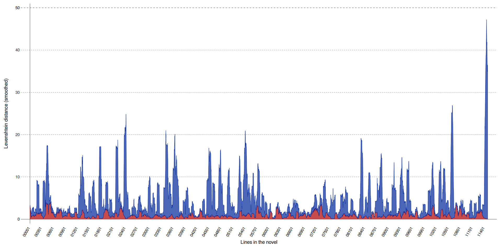
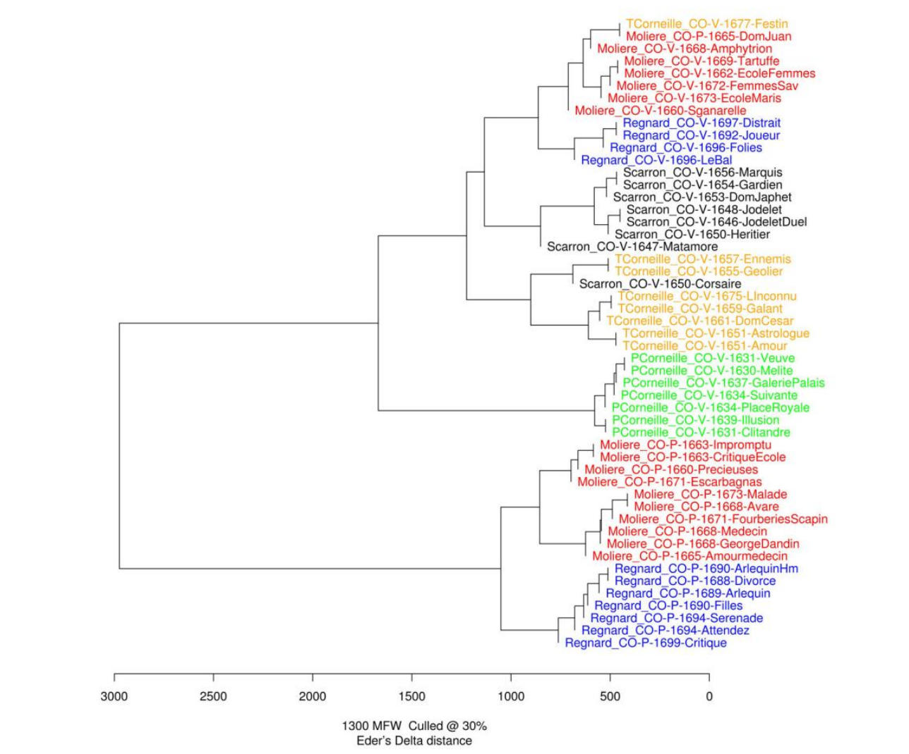
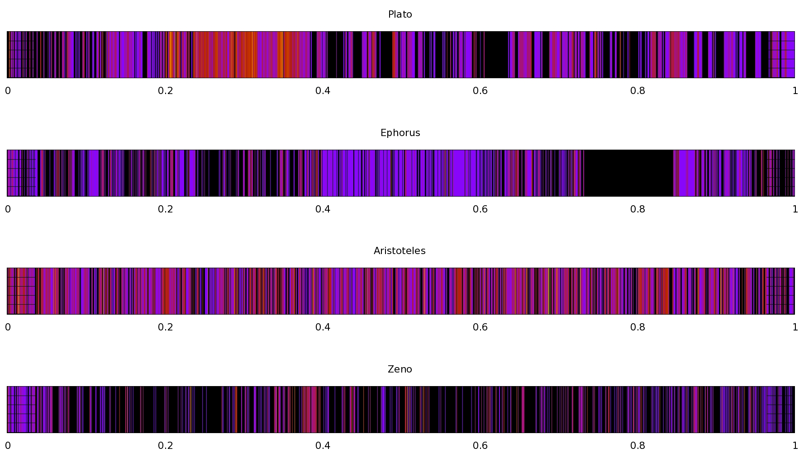

<!doctype html>
<html lang="en">
<head>
<meta charset="utf-8">
<!-- CUSTOMIZE THIS! -->
<title>DH und Intertextialität</title>
<meta name="author" content="Christof Schöch">
<!-- END -->
<meta name="description" content="Slides">
<meta name="apple-mobile-web-app-capable" content="yes">
<meta name="apple-mobile-web-app-status-bar-style" content="black-translucent">
<meta name="viewport" content="width=device-width, initial-scale=1.0, maximum-scale=1.0, user-scalable=no, minimal-ui">
<link rel="stylesheet" href="css/reveal.css">
<link rel="stylesheet" href="css/theme/simple.css" id="theme">
<!-- Code syntax highlighting -->
<link rel="stylesheet" href="lib/css/zenburn.css">
<!-- Printing and PDF exports -->
<script>
var link = document.createElement( 'link' );
link.rel = 'stylesheet';
link.type = 'text/css';
link.href = window.location.search.match( /print-pdf/gi ) ? 'css/print/pdf.css' : 'css/print/paper.css';
document.getElementsByTagName( 'head' )[0].appendChild( link );
</script>
<!--[if lt IE 9]>
<script src="lib/js/html5shiv.js"></script>
<![endif]-->
</head>

<body>
<div class="reveal">
<div class="slides">
<section data-markdown="" data-separator="^\n---\n" data-separator-vertical="^\n--\n" data-charset="utf-8">
<script type="text/template">

<!-- THIS IS WHERE THE CONTENT GOES! -->
<!-- Any section element inside of this container is displayed as a slide -->

## Workshop: Intertextualität aus der Perspektive der Digital Humanities
<br/>
<hr/>
<br/>
<br/>
<small>Christof Schöch, Würzburg</small>
<br/>
<small>RomANa III Workshop, Bonn, 27. Juli 2017</small>
<br/>
<small>Folien: http://christofs.github.io/intertext</small>
<br/>
<hr/>
</img>&nbsp;&nbsp;&nbsp;&nbsp;&nbsp;&nbsp;</img>&nbsp;&nbsp;&nbsp;&nbsp;&nbsp;&nbsp;</img>

---
## Überblick
<br/>
1. [Was sind die Digital Humanities?](#/2)
2. [Digitale Philologie](#/3)
3. [Intertextualität und DH](#/4)
4. [(Anschließend: Praxis-Teil: TXM)](#/5)

---
# Was sind die Digital Humanities?


--
## 817 Definitionen
<br/>
<br/>
#<a href="http://whatisdigitalhumanities.com/">whatisdigitalhumanities.com</a>

--
## Definition bei Wikipedia
<p></img></p>

--
## Sphärenmodell (Patrick Sahle)
<p></img></p>

--
## Digital Humanities: Eine Einführung (2017)
<p></img></p>

---
# Digitale Philologie

--
## Erzeugen/Anreichern von Text
<br/>
* Digitalisierung (Scannen, OCR) <!-- .element: class="fragment" data-fragment-index="1" -->
* Digitale Texteditionen und Textsammlungen <!-- .element: class="fragment" data-fragment-index="2" -->
* Linguistisch annotierte Korpora <!-- .element: class="fragment" data-fragment-index="3" -->
* Editionsphilologie: Stemmata, Kollationierung <!-- .element: class="fragment" data-fragment-index="4" -->
* Wichtigste Grundlage: Text Encoding Initiative <br/>(TEI, tei-c.org) <!-- .element: class="fragment" data-fragment-index="5" -->

--
## Analysieren/Interpretieren von Text
<br/>
* Quantitative vs. qualitative Verfahren <!-- .element: class="fragment" data-fragment-index="1" -->
* Explorative Verfahren vs. Hypothesentests <!-- .element: class="fragment" data-fragment-index="2" -->
* Natural Language Processing, Maschinelles Lernen, Neuronale Netze <!-- .element: class="fragment" data-fragment-index="3" -->
* Textvergleich: Unterschiede oder Gemeinsamkeiten <!-- .element: class="fragment" data-fragment-index="4" -->


---
# Intertextualität und DH: Panorama

--
## Kollationierung
<br/>
* Detaillierter Vergleich mehrerer Fassungen eines Textes
* Fokus auf den feinen Unterschieden
* Insbesondere relevant im Kontext der Editionswissenschaften

--
## Variant Graph für The Martian
</img>

--
## The Martian: Ausmaß der Änderungen
</img>
(Verlauf über den Text hinweg; Levenshtein-Distanz)

--
## Stilometrie
<br/>
* Stilistische / lexikalische Ähnlichkeit von Texten
* Diverse Maße für Textähnlichkeit
* Autorschaftsattribution (und mehr)
* Merkmale: Wörter, Topics, etc.

--
## Stilometrie: Autorschaftsattribution 
</img>
<p>(Molière-Corneille Kontroverse)</p>

--
## Topic-basierte Ähnlichkeit von Autoren
</img>
<p>(Topic Modeling mit französischen Krimis)</p>

--
## Kontrastive Analyse
<br/>
* Zwei Textgruppen: Identifikation distinktiver Merkmale
* Zahlreiche Maße der Distinktivität / "keyness"
* log-likelihood, t-Test, Zeta, etc.

--
## Distinktives Vokabular 
</img>
<p>(Vergleich von Komödien und Tragödien)</p>

--
## Historical Text-Reuse
<br/>
* Aufdecken von Zitaten, Anspielungen, Plagiaten
* Prinzip: flexibles "sequence alignment"<br/>(n-Gramm-Schindeln)
* Gruppen: eTrap (Göttingen), ARFL (Chicago)

--
## Quellen der Encyclopédie
</img>
<p>(Encyclopédie und Voltaire im Vergleich; Glenn Roe)</p>

--
## Zitate im Thesaurus Linguae Graecae
</img>
<p>(Heatmap der Autorenwerke; Marco Büchler)</p>

--
## Textmuster-Vergleich mit TXM

--
## Beispiel Spitzer/Racine
</img>
<p>(Muster: 'abstraktes Nomen + où' bei Racine)</p>

--
## Vergleich Racine/Zeitgenossen
<a href="img/comparison-statistics_MeanRatio12.svg"></img></a>
<p>(Über- und unterrepräsentierte Muster)</p>


---
# Praxis-Teil: TXM

--
## Allgemeines
<br/>
* Einführung in TXM: http://textometrie.ens-lyon.fr/
* TXM: Tool für das systematische Durchsuchen von Textsammlungen nach Mustern
* Beispielsammlung: französische Romane des 19. Jahrhunderts

--
## Beispiel-Frage
<br/>
* Ist Maupassant stärker von Flaubert beeinflusst als von Zola und/oder
Balzac?
* Welche sprachlichen und stilistischen Merkmale hat
Maupassant von Flaubert übernommen?

--
## Praktisches zum Mitmachen (1)
<br/>
* Textsammlung importieren
* Vorhandene Textsammlung laden
* Einfache Suchabfragen: Wortformen
* Weiter in die KWIC-Ansicht

--
## Praktisches zum Mitmachen (2)
<br/>
* Erweiterte Abfragen durch Reguläre Ausdrücke
* Erweiterte Abfragen durch Nutzung der Annotation
* Im Ergebnis: Komplexe Muster als Suchabfragen

--
## Praktisches zum Mitmachen (3)
<br/>
* Textsammlung nach Metadaten partitionieren
* Vergleichende Abfragen
* Kollokationen und Vergleich von Kollokationen


---
<br/>
<br/>
<br/>
## Danke!
<br/>
<br/>
<br/>
<br/>
<br/>
<br/>
<br/>
<hr/>
<p><a href="https://christofs.github.io/">christofs.github.io/intertext</a></p>
<p><a href="https://creativecommons.org/licenses/by/4.0/">Creative Commons Attribution 4.0</a><br/></p>
<hr/>
<br/>
<br/>
</script>
</section>


<!-- DON'T TOUCH UNLESS YOU KNOW WHAT YOU'RE DOING :-) -->
</div>
<script src="lib/js/head.min.js"></script>
<script src="js/reveal.js"></script>
<script>
// Full list of configuration options available at:
// https://github.com/hakimel/reveal.js#configuration
Reveal.initialize({
    controls: true,
    progress: true,
    history: true,
    center: true,
    transition: 'slide', // none/fade/slide/convex/concave/zoom
    // Optional reveal.js plugins
    dependencies: [
        { src: 'lib/js/classList.js', condition: function() { return !document.body.classList; } },
        { src: 'plugin/markdown/marked.js', condition: function() { return !!document.querySelector( '[data-markdown]' ); } },
        { src: 'plugin/markdown/markdown.js', condition: function() { return !!document.querySelector( '[data-markdown]' ); } },
        { src: 'plugin/highlight/highlight.js', async: true, callback: function() { hljs.initHighlightingOnLoad(); } },
        { src: 'plugin/zoom-js/zoom.js', async: true },
        { src: 'plugin/notes/notes.js', async: true }
        ]
    });
</script>
</body>
</html>
